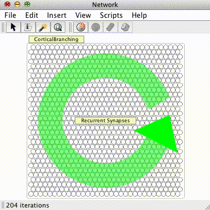

Network
Networks are built by creating neurons and connecting them with synapses. They are run by pressing the "play" or "step" button (see the quick reference). For a sense of what the colors, circles, etc. signify see the discussion of visual conventions.
There are a variety of different neurons and synapses, each with their own rules and parameters. By combining these together you can create indefinitely many different kinds of networks. There are also special types of networks called "subnetworks" which can be added to a simulation. Different subnetworks can be linked together, leading to even more complex and powerful simulations. There are also connection objects, layout objects, model groups and other functions which can be used to build neural networks. Follow the links on the right to learn more about these features.
Loose neurons and synapses
There are two main types of network in Simbrain, that involve slightly different default graphical behavior: (1) loose neurons and synapses, and (2) group-based operations. The two can be combined in one simulation.
Loose elements is the classic way individual neurons and synapses are shown in Simbrain.

The colored circles represent neurons or "nodes." The lines between nodes represent synaptic connections between neurons which direct the flow of activity in the network. The smaller blue and red discs at the ends of these lines represent synaptic connections. Each node and synapse can be individually adjusted by selecting it, pressing the up and down errors, or double clicking to reveal a dialog.
Groups
Large groups of neurons and (even more importantly) synapses are too unwieldy to represent and process, and so they are aggregated in to groups, neuron groups and synapse groups. In these cases the neurons and synapse are not typically individually adjusted, but are rather adjusted as a group, typically by double clicking or right-clicking on a yellow interaction box. Shown here is a cortical bursting network, which is a single neuron group and recurrent synapse group.

Spikes and Spike Responders
Simbrain has two kinds of neurons: activation-based neurons, and spiking neurons, and also allows the two to co-exist. Activation-based neurons are used in more traditional, connectionst types of application, which abstract from biological details, while spiking neurons are used in more biologically realistic simulations. Since spikes are discrete events without a numerical value, some way of converting them into numbers is required (e.g. when a spike arrives at a synapse). This is handled using spike responders.
Zooming: To zoom use the mouse-wheel or the pinch-to-zoom gesture on trackpads.
Panning: To pan press the command or control key while left-clicking and dragging. Note that by default auto-zoom is turned on; if you plan to zoom in and pan a lot it should be turend off. To fit all objects on screen hit the "F" key to invoke the zoom to fit command.
Moving Objects
To begin create a selection--usually by left-click dragging a lasso around what you want. Then drag or nudge these items:
Basic moving: Simply left click and drag the selected items.
Nudging: For fine tuning, users can also use the arrow keys (with Shift held down) to "nudge" selected items. The nudge amount in pixels can be set in the network preferences dialog.
Running a Network
Running a network: When Simbrain is first opened nothing happens. A sample network sits passively before the user. When the user "runs" the network it comes to life--an update algorithm is repeatedly called, which is visible in the form of spreading activity in network's nodes and (if learning is activated) changing weight sizes. The network can be run by pressing pressing the play button
 in the tool-bar to repeatedly iterate the network. Note that the image on the button becomes that of a "stop" button
in the tool-bar to repeatedly iterate the network. Note that the image on the button becomes that of a "stop" button
 . Pressing this button will stop the network. Thus the play/stop button acts as a toggle switch. You can also press the step button
. Pressing this button will stop the network. Thus the play/stop button acts as a toggle switch. You can also press the step button
 (or press "space") to iterate the network a single time. Sometimes repeatedly hitting the space bar is useful way to test a network.
(or press "space") to iterate the network a single time. Sometimes repeatedly hitting the space bar is useful way to test a network.